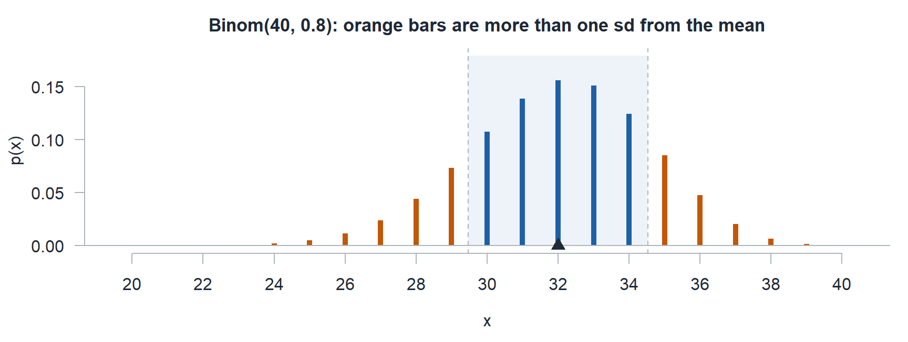
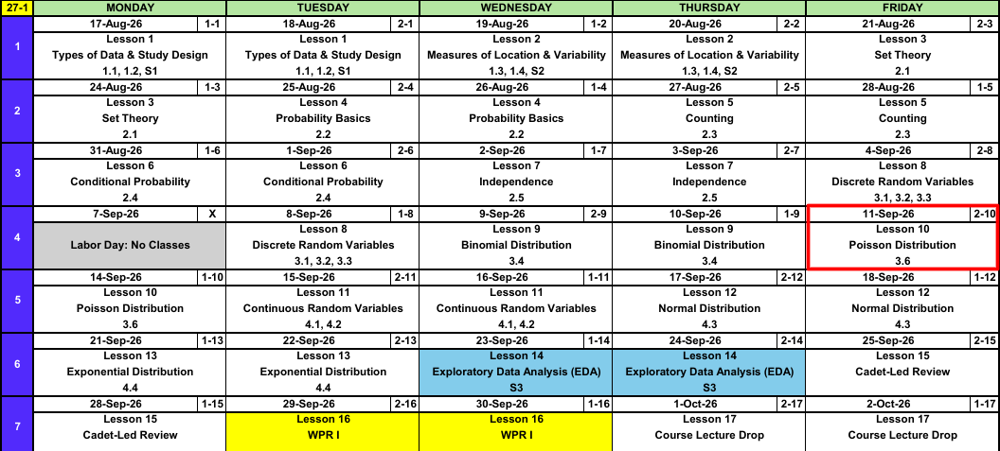
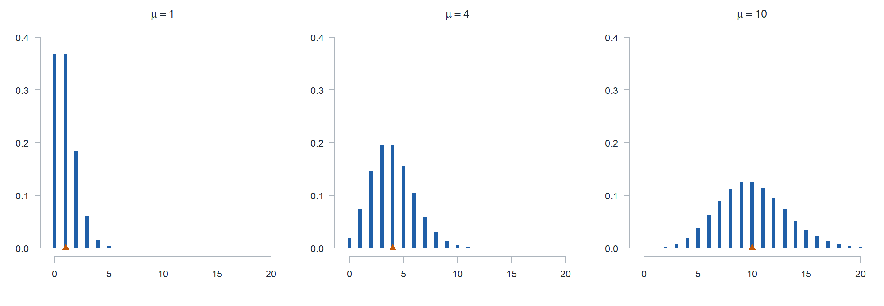
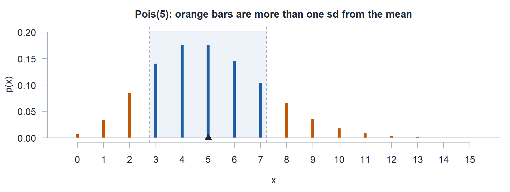

Lesson 10: Poisson Distribution

11 September 2001. Twenty-five years. We remember.
In Memoriam: My Classmates
Calendar

What We Did: Lessons 1 through 9
NoteReview: Data, Study Design, and Summaries (Lessons 1 and 2)
- Population vs sample, parameter (\(\mu\), \(\sigma\), \(p\)) vs statistic (\(\bar{x}\), \(s\), \(\hat{p}\)).
- Random sampling buys generalization, random assignment buys causation.
- Center: mean, median, trimmed mean. Spread: \(s^2\), \(s\), and the fourth spread \(f_s\).
NoteReview: Set Theory and Probability Basics (Lessons 3 and 4)
- Experiment, sample space \(\mathcal{S}\), event as a subset of \(\mathcal{S}\).
- Union is “or”, intersection is “and”, complement is “not”.
- Three axioms, the complement rule \(P(A') = 1 - P(A)\), and the addition rule \(P(A \cup B) = P(A) + P(B) - P(A \cap B)\).
- Equally likely outcomes: \(P(A) = N(A)/N\).
NoteReview: Counting (Lesson 5)
- Product rule: \(n_1 n_2 \cdots n_k\).
- Permutation (order matters): \(P_{k,n} = \dfrac{n!}{(n-k)!}\).
- Combination (order does not): \(\dbinom{n}{k} = \dfrac{n!}{k!\,(n-k)!}\).
NoteReview: Conditional Probability (Lesson 6)
- Conditional probability: \(P(A \mid B) = \dfrac{P(A \cap B)}{P(B)}\).
- Multiplication rule: \(P(A \cap B) = P(A \mid B)\,P(B)\).
- Law of Total Probability: \(P(B) = \sum_{i=1}^{k} P(B \mid A_i)\,P(A_i)\).
- Bayes’ Theorem flips the conditioning, and \(P(A \mid B) \ne P(B \mid A)\).
NoteReview: Independence (Lesson 7)
- Independent: \(P(A \mid B) = P(A)\), tested with \(P(A \cap B) = P(A)\,P(B)\).
- Independence collapses the conditional, multiplication, and addition rules.
- Mutually exclusive is not independent. Disjoint events are as dependent as events get.
- \(P(\text{at least one}) = 1 - P(\text{none})\), and “none” is a product under independence.
NoteReview: Discrete Random Variables (Lesson 8)
- A random variable \(X\) assigns a number to every outcome in \(\mathcal{S}\).
- pmf: \(p_X(x) = P(X = x)\), with \(p_X(x) \ge 0\) and \(\sum_x p_X(x) = 1\).
- cdf: \(F_X(x) = P(X \le x)\), a step function that jumps by \(p_X(x)\) at each value.
- For a discrete \(X\), \(\le\) and \(<\) are not interchangeable.
- Expected value \(E(X) = \sum_x x\,p_X(x)\), variance \(V(X) = E(X^2) - [E(X)]^2\).
NoteReview: Binomial Distribution (Lesson 9)
- BINS: binary, independent, number of trials fixed, same \(p\).
- pmf: \(p(x) = \dbinom{n}{x} p^x (1-p)^{n-x}\) for \(x = 0, 1, \dots, n\).
- Fully specify: \(X \sim \text{Binom}(n,\ p)\), variable, distribution, parameters.
dbinomis the pmf,pbinomis the cdf.- \(E(X) = np\) and \(V(X) = np(1-p)\).
What We’re Doing: Lesson 10
Objectives
- Identify settings modeled by the Poisson distribution, including the Poisson process. (SLO 7)
- Compute Poisson probabilities using \(\mu = \lambda t\) and interpret \(\mu\). (SLO 7)
- State and interpret the mean and variance of a Poisson random variable, noting that both equal \(\mu\). (SLO 7)
Required Reading
Devore 3.6
Finishing Lesson 9: One Binomial Question
A platoon of \(40\) cadets takes the ACFT. Each cadet passes on the first attempt with probability \(0.8\), independently of the others. Let \(X\) be the number who pass.
a) Fully specify the distribution of \(X\).
TipAnswer
\[X \sim \text{Binom}(n = 40,\ p = 0.8)\]
b) Find \(\mu\) and \(\sigma\).
TipAnswer
\[\mu = np = 40(0.8) = 32\]
\[\sigma = \sqrt{np(1-p)} = \sqrt{40(0.8)(0.2)} = \sqrt{6.4} = 2.5298\]
c) What is the probability \(X\) is more than one standard deviation above or below the mean?
TipAnswer
One standard deviation around the mean is \(32 \pm 2.5298\), so \((29.4702,\ 34.5298)\). \(X\) only takes whole numbers, so outside that interval means \(X \le 29\) or \(X \ge 35\).
The two tails are disjoint, so add them:
\[P(X \le 29) + P(X \ge 35) = 0.1608 + 0.1613 = \mathbf{0.3221}\]
pbinom(29, 40, 0.8) + 1 - pbinom(34, 40, 0.8)
Same answer from the inside out: 1 - (pbinom(34, 40, 0.8) - pbinom(29, 40, 0.8)).
The Takeaway for Today
NoteKey Concepts from Lesson 10
- The Poisson counts events in a window of time, length, or area, with no fixed \(n\)
- pmf: \(p(x; \mu) = \dfrac{e^{-\mu}\mu^x}{x!}\) for \(x = 0, 1, 2, \dots\)
- Poisson process: rate \(\lambda\) times window \(t\) gives the parameter \(\mu = \lambda t\)
- Fully specify: \(X \sim \text{Pois}(\mu = 5)\), variable, distribution, parameter
- In R-Lite:
dpoisis the pmf,ppoisis the cdf - Mean and variance: \(E(X) = V(X) = \mu\)
Opening: Counting Without an \(n\)
- Cadets walk up to the Cadet Store counter at an average rate of \(2.5\) per hour. How many show up in the next \(2\) hours?
- Route 9W averages \(0.4\) potholes per km. How many are on a \(10\) km stretch?
- A cadet’s research paper averages \(0.2\) typos per page. How many are in a \(15\) page paper?
- Emails hit your inbox at \(6\) per hour. How many arrive during a \(55\) minute class?
What Do These Have in Common?
Clue 1 A Rate Given per unit of time, length, or area: per hour, per km, per page.
Clue 2 A Window The interval the count is taken over: \(2\) hours, \(10\) km, \(15\) pages, \(55\) minutes.
Clue 3 No Cap A count of events, \(0, 1, 2, \dots\) Could be \(0\), \(3\), or \(11\). Nothing caps it.
There is no \(n\) to plug into \(\dbinom{n}{x}\), so none of these is binomial.
The Poisson Process
ImportantDefinition: The Poisson Process and pmf
Events occur over time at rate \(\lambda\) when
- in a very short interval, the chance of one event is proportional to the length of the interval,
- the chance of two or more events in that very short interval is negligible, and
- counts in non-overlapping intervals are independent.
Then the number of events \(X\) in a window of length \(t\) is Poisson, with pmf \[p(x; \mu) = \frac{e^{-\mu}\mu^x}{x!}, \qquad x = 0, 1, 2, \dots, \qquad \mu = \lambda t.\]
\(\lambda\) is the rate, \(t\) is the window, and the distribution depends only on their product.
Back to the four scenarios. Find \(\lambda\), \(t\), and \(\mu\) for each.
- Cadets walk up to the Cadet Store counter at an average rate of \(2.5\) per hour. How many show up in the next \(2\) hours?
- Route 9W averages \(0.4\) potholes per km. How many are on a \(10\) km stretch?
- A cadet’s research paper averages \(0.2\) typos per page. How many are in a \(15\) page paper?
- Emails hit your inbox at \(6\) per hour. How many arrive during a \(55\) minute class?
TipAnswer
| scenario | \(\lambda\) | \(t\) | \(\mu = \lambda t\) |
|---|---|---|---|
| Cadet Store | \(2.5\) per hour | \(2\) hours | \(5\) cadets |
| Route 9W | \(0.4\) per km | \(10\) km | \(4\) potholes |
| Research paper | \(0.2\) per page | \(15\) pages | \(3\) typos |
| Inbox | \(6\) per hour | \(55\) min \(= \tfrac{55}{60}\) hour | \(5.5\) emails |
Match the units before you multiply. The inbox rate is per hour, so the \(55\) minutes has to become hours first.
\(\mu\) is the expected count in the window: we expect \(5\) cadets at the counter in \(2\) hours.
NoteFully specify the distribution
\[X \sim \text{Pois}(\mu = 5)\]
- Designate the random variable. \(X\) is the number of arrivals in \(2\) hours.
- Name the distribution. Poisson.
- Specify the parameter. \(\mu = \lambda t = 2.5(2) = 5\).
One parameter this time, and it still goes in every answer.
Finding Probabilities with the Poisson Distribution
\(X \sim \text{Pois}(\mu = 5)\), arrivals at the counter.
\(P(X = 3)\), exactly three arrivals. Straight off the pmf:
\[P(X = 3) = \frac{e^{-5}5^3}{3!} = 0.1404\]
\(P(X \le 3)\), three or fewer arrivals. Evaluate the pmf at every value the event contains:
\[\begin{aligned} P(X = 0) &= \frac{e^{-5}5^0}{0!} = 0.0067 \\ P(X = 1) &= \frac{e^{-5}5^1}{1!} = 0.0337 \\ P(X = 2) &= \frac{e^{-5}5^2}{2!} = 0.0842 \\ P(X = 3) &= \frac{e^{-5}5^3}{3!} = 0.1404 \end{aligned}\]
They are disjoint, so add them:
\[P(X \le 3) = 0.0067 + 0.0337 + 0.0842 + 0.1404 = 0.2650\]
Write that as one line:
\[P(X \le 3) = \sum_{x = 0}^{3} \frac{e^{-5}5^x}{x!}\]
This is the cdf of the Poisson distribution.
\(P(X > 3)\) has no last term to add up to. Use the complement: \(1 - P(X \le 3)\).
| statement | R-Lite | value |
|---|---|---|
| \(P(X = 3)\) | dpois(3, 5) |
|
| \(P(X \le 3)\) | ppois(3, 5) |
|
| \(P(X < 3)\) | ppois(2, 5) |
|
| \(P(X > 3)\) | 1 - ppois(3, 5) |
|
ppois(3, 5, lower.tail = FALSE) |
||
| \(P(X \ge 3)\) | 1 - ppois(2, 5) |
|
ppois(2, 5, lower.tail = FALSE) |
||
| \(P(X \ne 3)\) | 1 - dpois(3, 5) |
|
| \(P(2 \le X \le 6)\) | ppois(6, 5) - ppois(1, 5) |
Fill in the value column in class.
Mean and Variance
ImportantMean and Variance of a Poisson
If \(X \sim \text{Pois}(\mu)\), then \[E(X) = \mu, \qquad V(X) = \mu, \qquad \sigma = \sqrt{\mu}.\]
For the counter:
\[\begin{aligned} \mu = E(X) &= \lambda t = 2.5(2) = 5 \\ \sigma^2 = V(X) &= \lambda t = 5 \\ \sigma &= \sqrt{\lambda t} = \sqrt{5} = 2.236 \end{aligned}\]
The mean and the variance are the same number. \(\mu\) is the expected count in the window, and it also sets the spread.
NoteHow We Derived the Distributions
Start from the Lesson 8 definition and substitute the Poisson pmf.
\[E(X) = \sum_x x\,p(x) = \sum_{x=0}^{\infty} x \, \frac{e^{-\mu} \mu^x}{x!}\]
The \(x = 0\) term is zero, so start at \(1\). Cancel the \(x\) against \(x!\) and pull \(\mu\) out front.
\[E(X) = \mu \sum_{x=1}^{\infty} \frac{e^{-\mu} \mu^{x-1}}{(x-1)!}\]
Let \(y = x - 1\). What is left is a full Poisson pmf, so it sums to \(1\).
\[E(X) = \mu \sum_{y=0}^{\infty} \frac{e^{-\mu} \mu^{y}}{y!} = \mu\]
For the variance, the same trick twice gives
\[E[X(X-1)] = \mu^2 \quad\Longrightarrow\quad E(X^2) = \mu^2 + \mu\]
Then use the Lesson 8 shortcut \(V(X) = E(X^2) - [E(X)]^2\).
\[V(X) = \mu^2 + \mu - \mu^2 = \mu\]
What the Distribution Looks Like

- Small \(\mu\) piles up against \(0\) and skews right. It cannot go below \(0\), and nothing stops it on the right.
- As \(\mu\) grows, the distribution slides right, spreads out (variance is \(\mu\)), and looks more symmetric.
Class Problem
Same counter, \(X \sim \text{Pois}(\mu = 5)\). What is the probability the number of arrivals lands more than one standard deviation above the mean or more than one standard deviation below it?
TipAnswer
\[\mu = 5, \qquad \sigma = \sqrt{5} = 2.2361\]
One standard deviation around the mean is \((2.7639,\ 7.2361)\), so more than one away means \(X \le 2\) or \(X \ge 8\).

\[P(X \le 2) + P(X \ge 8) = 0.1247 + 0.1334 = \mathbf{0.2580}\]
ppois(2, 5) + 1 - ppois(7, 5)
Board Problems
Problem 1: Sick Call
Cadets report to sick call at an average rate of \(4\) per hour. Let \(X\) be the number who report in one hour.
NoteQuestions
Fully specify the distribution of \(X\).
What makes this Poisson and not binomial?
Give the R-Lite call and the value for each: \(P(X = 6)\), \(P(X < 6)\), \(P(X \le 6)\), \(P(X > 6)\), and \(P(X \ge 6)\). Do \(P(X = 6)\) by hand first.
Find \(E(X)\), \(V(X)\), and \(\sigma_X\), then find the probability \(X\) lands more than one standard deviation above or below the mean.
TipAnswers
\(X\) is the number of cadets at sick call in one hour. \(X \sim \text{Pois}(\mu = 4)\), with \(\mu = \lambda t = 4(1) = 4\).
A rate (\(4\) per hour), a window (\(1\) hour), and no fixed number of trials. Nothing caps how many cadets can walk in.
By hand,
\[P(X = 6) = \frac{e^{-4}4^6}{6!} = \frac{(0.0183)(4096)}{720} = \mathbf{0.1042}\]
| statement | R-Lite | value |
|---|---|---|
| \(P(X = 6)\) | dpois(6, 4) |
0.1042 |
| \(P(X < 6)\) | ppois(5, 4) |
0.7851 |
| \(P(X \le 6)\) | ppois(6, 4) |
0.8893 |
| \(P(X > 6)\) | 1 - ppois(6, 4) |
0.1107 |
| \(P(X \ge 6)\) | 1 - ppois(5, 4) |
0.2149 |
- \[E(X) = 4, \qquad V(X) = 4, \qquad \sigma_X = \sqrt{4} = 2\]
One standard deviation around the mean is \((2,\ 6)\). The endpoints are whole numbers, and \(X = 2\) and \(X = 6\) are exactly one standard deviation away, not more. So more than one away means \(X \le 1\) or \(X \ge 7\).
\[P(X \le 1) + P(X \ge 7) = 0.0916 + 0.1107 = \mathbf{0.2023}\]
R-Lite: ppois(1, 4) + 1 - ppois(6, 4).
Problem 2: Route Clearance
A route clearance team finds road defects at an average rate of \(0.3\) per kilometer. Today’s route is \(10\) km. Let \(X\) be the number of defects found.
NoteQuestions
Fully specify the distribution of \(X\).
Give the R-Lite call and the value for each: \(P(X = 2)\), \(P(X < 2)\), \(P(X \le 2)\), \(P(X > 2)\), \(P(X \ge 2)\), \(P(X \ne 0)\), and \(P(1 \le X \le 4)\).
Interpret \(\mu\) in one sentence.
Find \(E(X)\), \(V(X)\), and \(\sigma_X\), then find the probability \(X\) lands more than one standard deviation above or below the mean.
TipAnswers
\(X\) is the number of defects on the \(10\) km route. \(X \sim \text{Pois}(\mu = 3)\), with \(\mu = \lambda t = 0.3(10) = 3\). The window is a length, not a time.
| statement | R-Lite | value |
|---|---|---|
| \(P(X = 2)\) | dpois(2, 3) |
0.2240 |
| \(P(X < 2)\) | ppois(1, 3) |
0.1991 |
| \(P(X \le 2)\) | ppois(2, 3) |
0.4232 |
| \(P(X > 2)\) | 1 - ppois(2, 3) |
0.5768 |
| \(P(X \ge 2)\) | 1 - ppois(1, 3) |
0.8009 |
| \(P(X \ne 0)\) | 1 - dpois(0, 3) |
0.9502 |
| \(P(1 \le X \le 4)\) | ppois(4, 3) - ppois(0, 3) |
0.7655 |
Over many \(10\) km routes like this one, the team averages \(3\) defects per route.
\[E(X) = 3, \qquad V(X) = 3, \qquad \sigma_X = \sqrt{3} = 1.7321\]
One standard deviation around the mean is \((1.2679,\ 4.7321)\), so more than one away means \(X \le 1\) or \(X \ge 5\).
\[P(X \le 1) + P(X \ge 5) = 0.1991 + 0.1847 = \mathbf{0.3839}\]
R-Lite: ppois(1, 3) + 1 - ppois(4, 3).
Problem 3: TOC Radio Traffic
A tactical operations center takes radio calls at an average rate of \(18\) per hour. The battle captain watches a \(20\) minute window. Let \(X\) be the number of calls in that window.
NoteQuestions
Fully specify the distribution of \(X\). Watch the units.
Give the R-Lite call and the value for each: \(P(X = 8)\), \(P(X < 8)\), \(P(X \le 8)\), \(P(X > 8)\), and \(P(X \ge 8)\).
Find \(E(X)\), \(V(X)\), and \(\sigma_X\), then find the probability \(X\) lands more than one standard deviation above or below the mean.
TipAnswers
- \(X\) is the number of calls in \(20\) minutes. The rate is per hour and the window is in minutes, so convert first: \(t = 20/60 = 1/3\) hour.
\[\mu = \lambda t = 18\left(\tfrac{1}{3}\right) = 6, \qquad X \sim \text{Pois}(\mu = 6)\]
| statement | R-Lite | value |
|---|---|---|
| \(P(X = 8)\) | dpois(8, 6) |
0.1033 |
| \(P(X < 8)\) | ppois(7, 6) |
0.7440 |
| \(P(X \le 8)\) | ppois(8, 6) |
0.8472 |
| \(P(X > 8)\) | 1 - ppois(8, 6) |
0.1528 |
| \(P(X \ge 8)\) | 1 - ppois(7, 6) |
0.2560 |
- \[E(X) = 6, \qquad V(X) = 6, \qquad \sigma_X = \sqrt{6} = 2.4495\]
One standard deviation around the mean is \((3.5505,\ 8.4495)\), so more than one away means \(X \le 3\) or \(X \ge 9\).
\[P(X \le 3) + P(X \ge 9) = 0.1512 + 0.1528 = \mathbf{0.3040}\]
R-Lite: ppois(3, 6) + 1 - ppois(8, 6).
Problem 4: Changing the Window
The battalion S6 shop gets help desk tickets at an average rate of \(1.5\) per hour.
NoteQuestions
What is the probability of no tickets in the next hour?
What is the probability of exactly \(2\) tickets in the next \(2\) hours?
What is the probability of at least \(3\) tickets in a \(4\) hour shift?
What is the probability of no tickets in the next \(30\) minutes?
TipAnswers
Same \(\lambda = 1.5\) every time. Each new window is a new \(\mu = \lambda t\), so a new distribution.
\(\mu = 1.5(1) = 1.5\). \(P(X = 0) = e^{-1.5} = \mathbf{0.2231}\).
dpois(0, 1.5)\(\mu = 1.5(2) = 3\). \(P(X = 2) = \dfrac{e^{-3}3^2}{2!} = \mathbf{0.2240}\).
dpois(2, 3)\(\mu = 1.5(4) = 6\). \(P(X \ge 3) = 1 - P(X \le 2) = \mathbf{0.9380}\).
1 - ppois(2, 6)\(\mu = 1.5(0.5) = 0.75\). \(P(X = 0) = e^{-0.75} = \mathbf{0.4724}\).
dpois(0, 0.75)
Note \(P(X = 0) = e^{-\mu}\) always, since \(\mu^0 / 0! = 1\).
Problem 5: Stretch
A satellite link drops at an average rate of \(0.4\) per hour, following a Poisson process.
NoteQuestions
Write \(P(\text{at least one drop in } t \text{ hours})\) in terms of \(t\).
How long a window gives at least a \(0.95\) chance of one or more drops?
An exercise runs \(20\) hours. What is the smallest \(k\) with \(P(X \le k) \ge 0.95\), and what R-Lite call answers it directly?
TipAnswers
- Lesson 7’s move, “at least one” is the complement of “none”:
\[P(X \ge 1) = 1 - P(X = 0) = 1 - e^{-0.4t}\]
- Solve \(1 - e^{-0.4t} \ge 0.95\), so \(e^{-0.4t} \le 0.05\):
\[t \ge \frac{\ln(20)}{0.4} = \mathbf{7.49 \text{ hours}}\]
Unlike the binomial’s \(n\), \(t\) is not a count, so there is nothing to round.
- \(\mu = 0.4(20) = 8\).
qpois(0.95, 8)returns the smallest \(k\) with \(F(k) \ge 0.95\), which is \(\mathbf{13}\). Check: \(F(12) = 0.9362\) falls short and \(F(13) = 0.9658\) clears it.
Before You Leave
Today
- A rate, a window, and no fixed \(n\) point to the Poisson
- \(\mu = \lambda t\), and the units of \(\lambda\) and \(t\) have to match
dpoisandppoiscover every probability statement once you handle the endpoints- \(E(X) = V(X) = \mu\)
Any questions?
Next Lesson
Lesson 11: Continuous Random Variables
- Use a probability density function (pdf) to compute probabilities as areas, and recognize that any exact value has probability zero
- Obtain the cdf from the pdf and use it to find probabilities and percentiles
- Compute the expected value, variance, and standard deviation of a continuous random variable
Reading: Devore 4.1 and 4.2
Upcoming Graded Events
- WebAssign 3.6 - Due at the start of Lesson 11
- WPR I - Lesson 16 (covers Lessons 1-13)
- TEE - 15-18 Dec 2026